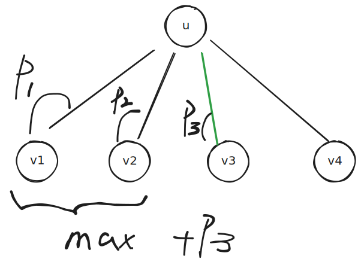

# 树的直径定义
给定一棵带权(边)树
- 距离: 两个点路径上的边权和
- 树的直径: 最大距离
# DP求树的直径
我们认为(假定)树的根为1,
- tree(i) 表示以点 i 为根的子树.
- pathLca(i) 表示路径上的两个端点的lca为点 i 的路径的集合
所有路径的集合=i=1⋃npathLca(i)根据公式
A=B∪C→max(A)=max( max(B),max(C) )那么答案就是
max_ans=i=1maxn(max(pathLca(i)))于是问题转换成求 P(i)=max(pathLca(i)),易想到
- P(i) 表示经过点 i 的最长链,且 i 是链的 lca
- D(i) 表示点 i 到叶结点的 最长链
- xi 表示点 i 的孩子
- e(i,xi) 表示边 (i,xi) 的长度
D(i)=max{D(xi)+e(i,xi)}P(i)=max{D(xi)+e(i,xi)+D(yi)+e(i,yi)},xi<yi
- 设$Dt(i,x_i) = D(x_i) + e(i,x_i)
那么这个问题就变成的集合最大二值和问题
